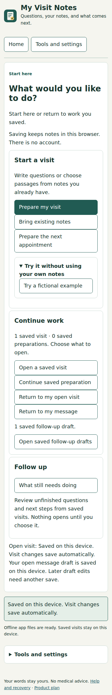
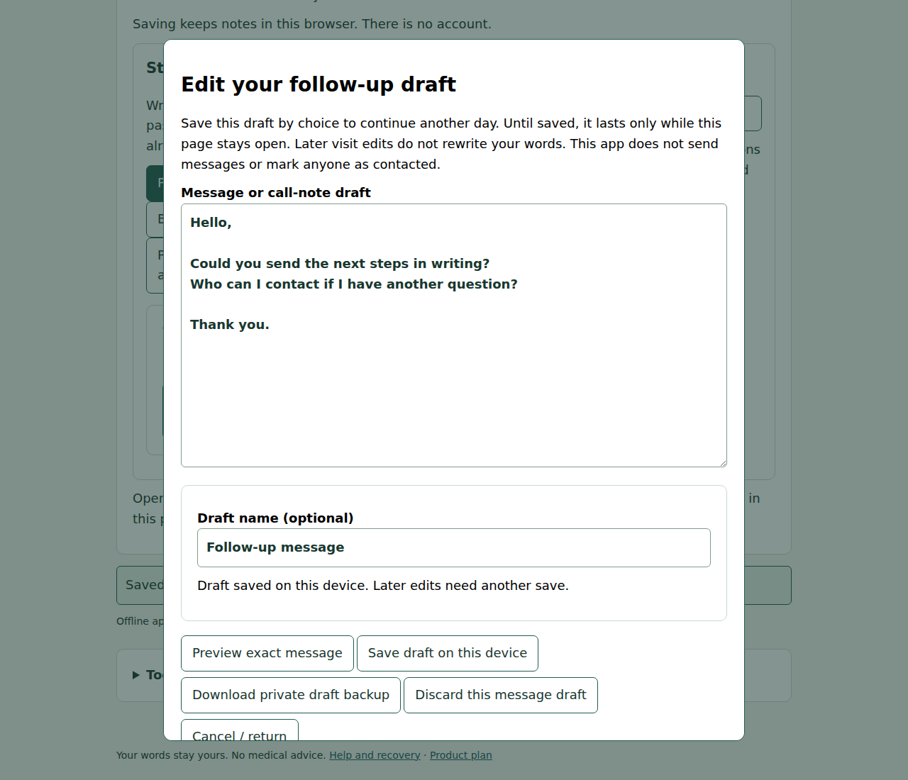

1 / 12 · The decision
Let people stop before the work is finished
A follow-up message or progress entry can be worth keeping before it is ready. The previous app retained that work only while its page stayed open. This delivery adds an explicit way to save it and return another day.
Speaker notes
This is a verified product limitation, not a claim about how often people encounter it. The feature is built for the shared desktop and mobile web app. Native Android and iOS delivery remains a separate later decision.
2 / 12 · The promise
Save the words without pretending something happened
Saving a draft does not send a message, contact an office, answer a question or record progress. It keeps a private working copy on this browser. Later edits need another explicit save.
Speaker notes
The main product distinction is between preparing an entry and recording it. The user must be able to understand that distinction from the controls and status messages, not from a technical explanation.
3 / 12 · First save
Ask before keeping private work
Save draft on this device explains what stays in the browser. Message drafts keep exact wording and source context. Progress drafts also keep their original item so newer changes can be detected. Anyone using this browser may open them.
Speaker notes
There is no account, background upload or automatic sending. Saving locally does not encrypt the data or provide recovery after all browser data is removed. An optional draft name makes deliberate reopening easier.
4 / 12 · Home
Say what is saved without showing the private words
Home shows a saved-draft count and an explicit Open saved follow-up drafts action. Draft names and content appear only after choosing the list. The app does not automatically reopen the last message after a restart.

Speaker notes
Working editors still have return controls. Those controls are separate from the saved list: closing a dialog does not mean every edit was saved. Home status distinguishes a saved draft from unfinished work kept only in the page.
5 / 12 · Exact return
Reopen the work, not a newly generated version
Saved messages keep exact edited words and line breaks. Progress keeps the chosen state, date and private note. Later visit edits do not rebuild the message or replace the draft fields. Saved drafts can reopen offline after setup.

Speaker notes
A copied message and a structured private backup are different. Plain text is useful elsewhere; the structured backup keeps the fields needed to reopen the draft. Both kinds of downloaded file need private storage.
6 / 12 · Changed sources
Keep the old draft without overwriting newer notes
If the original item changed or disappeared, the draft stays readable and downloadable. Recording its progress is blocked. The person can review current saved work and deliberately start a new entry. Similar wording is not proof that another item is the original.
Speaker notes
This rule matters after deletion, another tab’s edits and transfer. The app must not quietly adopt the latest item as the old draft’s starting point. Saving the draft itself remains different from applying its progress to a visit.
7 / 12 · Finish safely
Record the entry and remove its draft together
Finishing a saved progress draft adds one history entry and removes that exact saved draft in the same successful write. A failure, conflict or cancelled waiting operation does neither. Downloading a message leaves its saved draft and visit states unchanged.
Speaker notes
Double confirmation must not create two history entries. An older open editor must not delete a saved draft someone changed in another tab. These are data checks as well as interface checks.
8 / 12 · Deletion
Discard working edits and delete saved copies separately
Discard removes the editor’s working copy, not its saved draft. Delete saved draft asks first and leaves the visits and downloaded files alone. Deleting a visit does not erase independent drafts that may still contain its earlier wording.
Speaker notes
Be explicit about every remaining copy. This app cannot remove files that were downloaded, copied or kept on another browser. Deletion here is not a promise of secure erasure from a physical device.
9 / 12 · Backup and transfer
Carry drafts with the right source version
Saved drafts travel in the private device-transfer file. Different versions stay separate. When a visit gets a new local identity, its draft still refers to the version that travelled with it. Unsaved later edits must be saved first or backed up separately.
Speaker notes
A draft-only backup contains no trusted source-visit mapping for another browser. Its restored content remains readable without guessing which local item to update. Full device transfer carries the visit and its draft links together. Old transfer files must remain recognized so repeated imports cannot recreate deleted notes.
10 / 12 · Failure and interruption
Keep the words when saving cannot finish
A failed save leaves the working text and a clear not-saved message. A queued save, finish or delete is cancelled when its dialog closes. Two tabs cannot silently overwrite each other’s saved drafts.
Speaker notes
Browser-close warnings are additional protection, not a guarantee on phones. The useful promise is tied to a confirmed successful save. No offline claim applies until app files are ready.
11 / 12 · Evidence
Check the whole return journey
16 of 16 recorded draft browser checks passed. They cover exact saving, offline reopening, failures, source changes, two tabs, transfer, cancellation, deletion and keyboard/layout behavior.
- DF01 — Message saving is explicit, exact, separate from sending and neutral after reload: passed
- DF02 — Saved progress reopens offline and finishing records once while removing only its saved draft: passed
- DF03 — A changed or deleted original leaves saved progress readable without overwriting new work: passed
- DF04 — Failed draft save retains exact words and successful retry saves only one copy: passed
- DF05 — Closing a queued draft save cancels the write and keeps the temporary editor: passed
- DF06 — Private backup restore previews exact words, preserves the editor and skips repeated restores: passed
- DF07 — Saved-draft deletion asks first and does not remove independent working edits: passed
- DF08 — Full browser restart offline keeps a saved draft without exposing it on Home: passed
- DF09 — Two tabs cannot overwrite a newer saved draft or delete it while finishing an older entry: passed
- DF10 — Failed or cancelled saved-progress completion neither records history nor deletes its draft: passed
- DF11 — Cancelling a queued saved-draft deletion preserves both the saved draft and visits: passed
- DF12 — Opening another saved draft protects unfinished edits and discard leaves the saved copy intact: passed
- DF13 — Two isolated browsers transfer a saved progress draft, finish offline, and retain the sender unchanged: passed
- DF14 — Keyboard draft saving, deliberate reopening and long content fit narrow and enlarged views: passed
- DF15 — Malformed draft files and cancelled choices leave saved data and private wording unchanged: passed
- DF16 — Previously restored legacy files remain recognized after upgrade and do not recreate deleted visits: passed
Recorded 2026-09-16T21:53:45.024Z. Results and tested files.
Speaker notes
Read the acceptance audit for current release approval and source-matching reports. The required package check is separate from development-folder tests. Existing visit, preparation, recovery, follow-up and conversation checks remain required.
12 / 12 · Delivery and limits
A complete engineering release, with clear limits
The delivery includes the working app, detailed requirements, twelve fictional journeys, this presentation and speaker notes, help, test evidence and a verified downloadable package. No participant usefulness, physical-phone behavior or screen-reader result is claimed.
Speaker notes
A future native Android or iOS release needs its own packaging, device, update and data-recovery work. This milestone does not claim that responsive web testing proves native-app behavior.